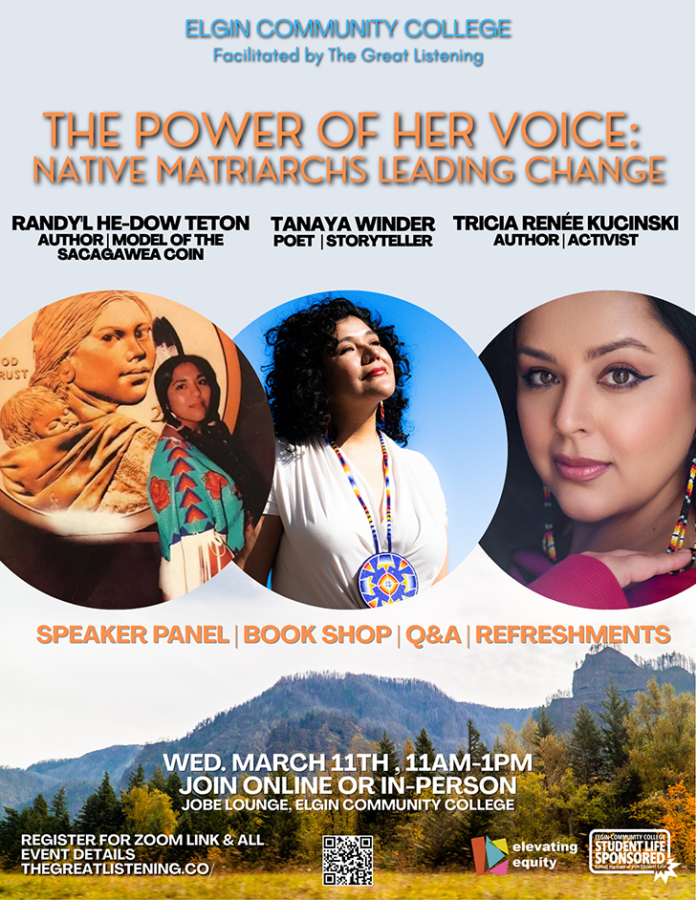

The Power of Her Voice: Native Matriarchs Leading Change
Join us in welcoming three incredible Native Shoshone leaders:
Randy’L Teton: Shoshone-Bannock author and model of the US Sacagawea dollar coin
Tanaya Winder: Duckwater Shoshone poet and storyteller
Tricia Renée Kucinski: Eastern Shoshone author and activist
The Great Listening is honored to host these brilliant authors for an exciting panel full of storytelling, timely wisdom, and honoring Indigenous ancestral truths.
Anyone can join from anywhere in the world via Zoom.
Elgin-area folks are encouraged to join in-person for book shopping and refreshments: Jobe Lounge, Elgin Community College (Building B.)
This event is free and open to the public.